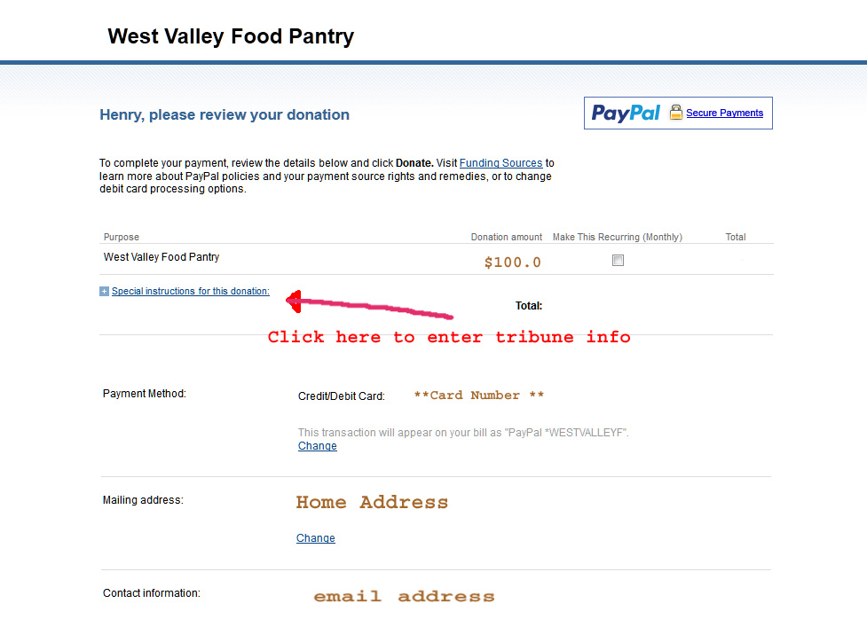

You can help a few of the thousands of needy in our community that are unable to feed their
families due to high unemployment and
the poor economy. Donate a bag of food or write a check.
Perhaps you have a surplus of vegetables from your garden or fruit trees that produce more than you need.
And any donation of $1 or more to a food pantry goes a
long way to help the families
in need, as a dollar buys food for about 4 meals. Government supplied food has been cut 40% so we
depend more on contributions and
individual food drives to support our efforts.
We buy about $ 10,000 of food each month with hundreds of coupons and bulk discounts
from our local stores. A dollar buys an 18 oz. peanut butter or offsets the cost of 25 pound
sacks of rice or pinto beans. Ralphs,
Vons and Pavilions, Smart & Final, Trader Joes, Albertson's, and Sprouts all support the pantry.
The average client at our pantry receives
enough food for about 3 days worth of meals, but only once each month
as we have a very limited budget that supports about 50 clients each day,
5 days a week.
We accept online donations!
We accept credit and debit cards (as well as PayPal).
You do not need a PayPal account!
Use the option to the bottom left of the PayPal screen to pay without an account.
You can use our PayPal button for tribute donations as well. However, you should designate the person's
name and the reason for the tribute before you
submit the donation. The memo field for PayPal can be accessed
on the donation
review page (after you enter all the other information, but before you actually submit
the donation) as shown below:

If you would prefer to donate via check or cash,
please send your tax deductible donations to:
West Valley Food Pantry
5700 Rudnick Avenue
Woodland Hills,
California 91367
Coupons help too! Click here
to see how you can bring Ralph's coupons to the Pantry.